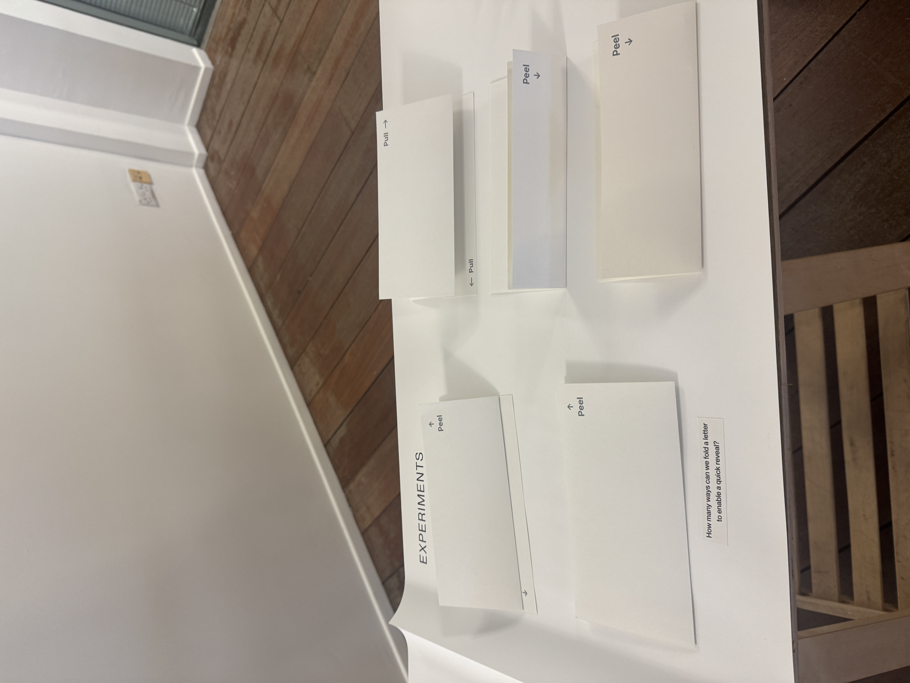
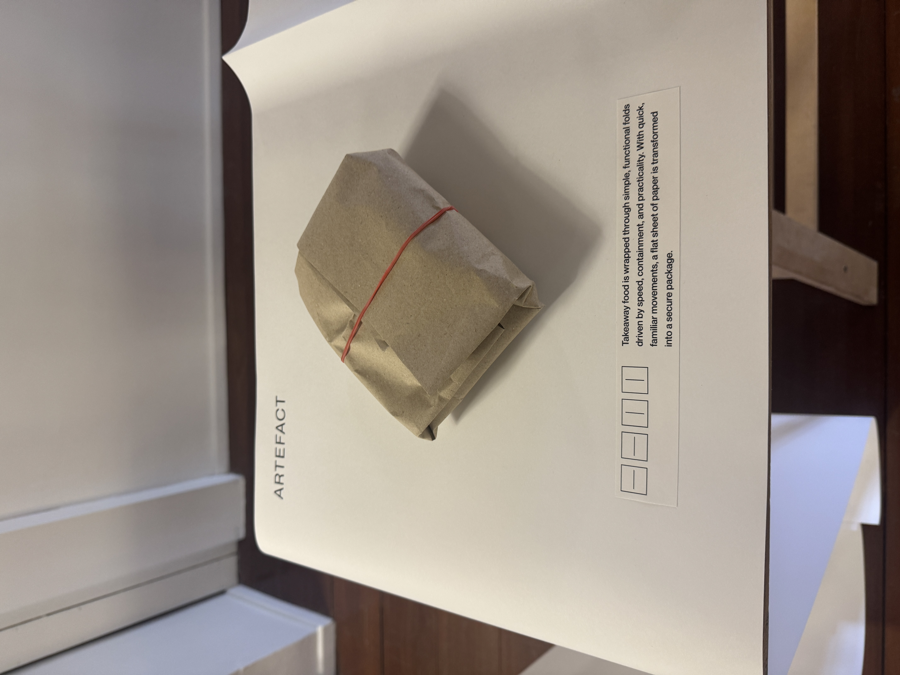
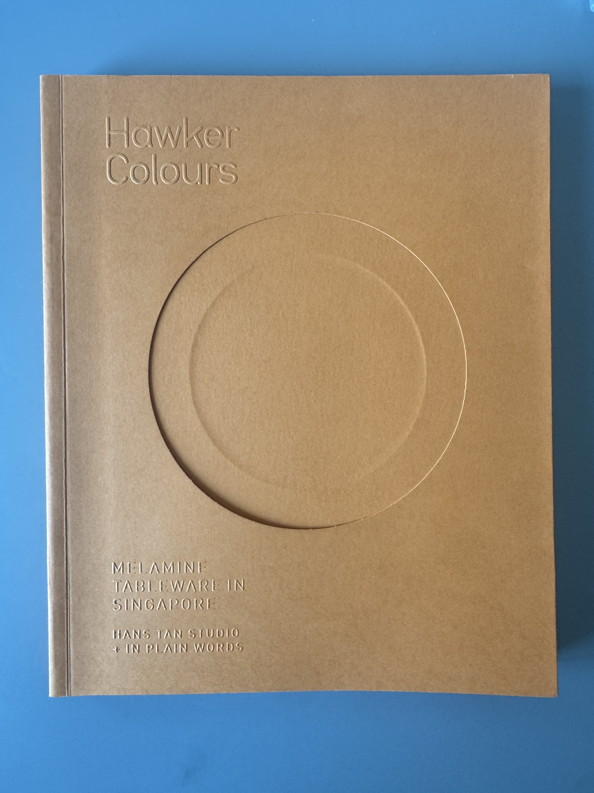
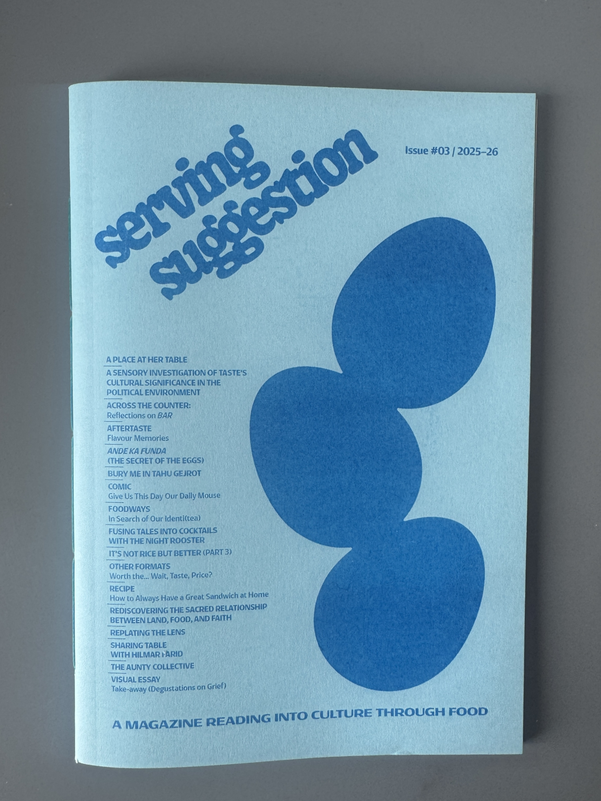
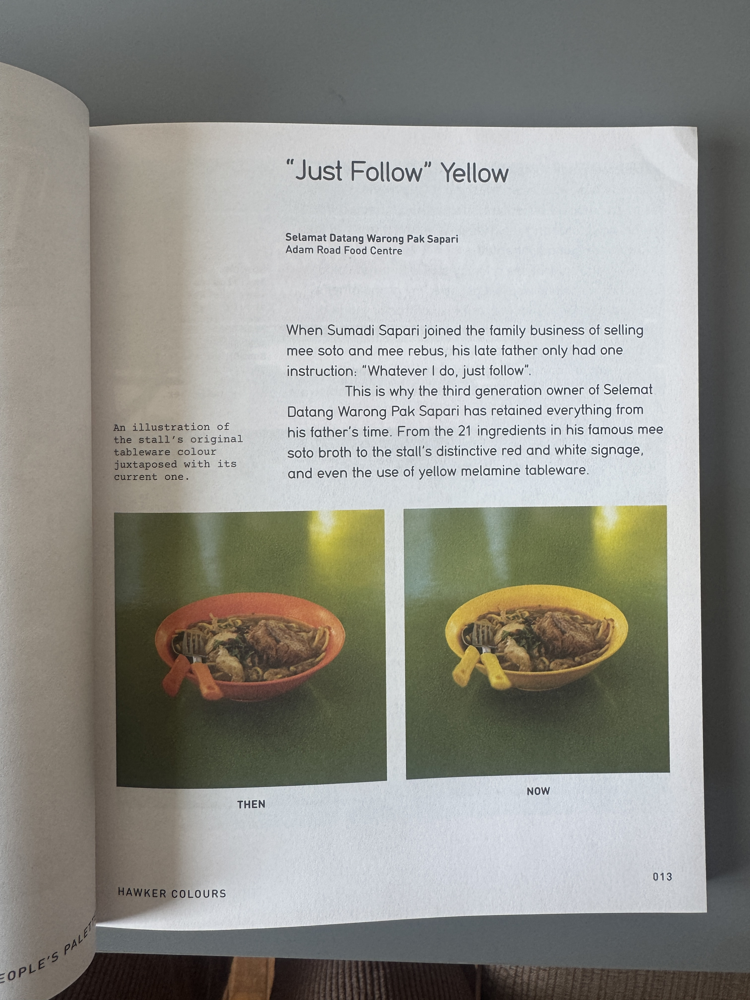
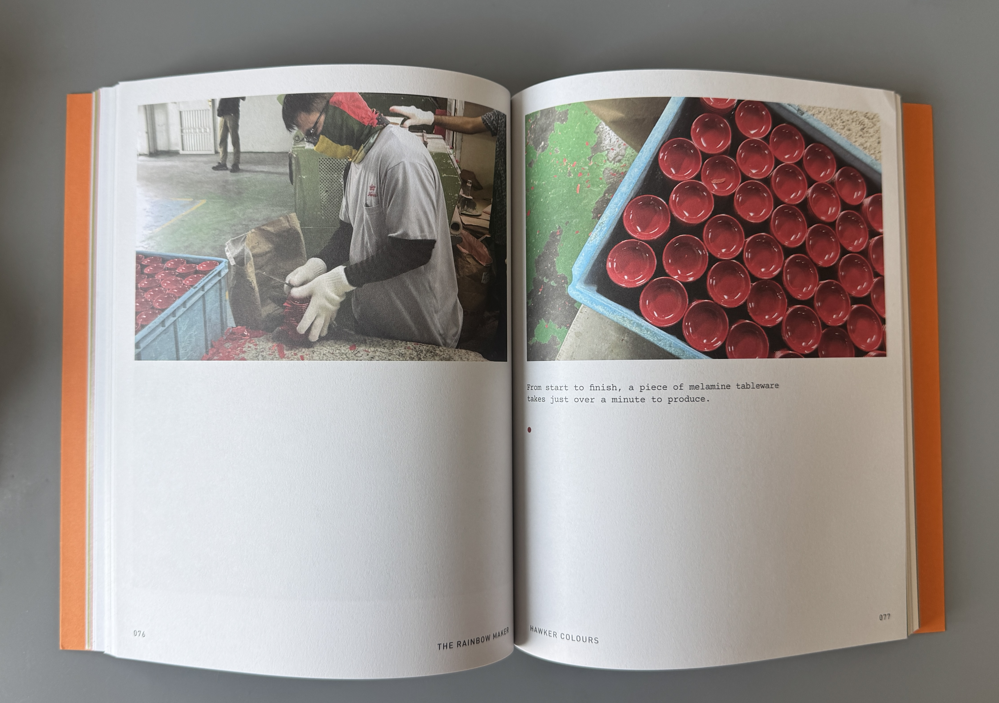

Research Exploration
For this week's research I did read the book, “Down south, Outgazing our views”. It tells me a perspective of how people practice graphic design in Indonesia. I read this book because I didn’t have a clear path of what I wanted to do for my project but I did want to do something related to my culture. I wanted to include this to my research because I find the content of the books quite interesting and is important regarding my research. It talks about the graphic design within Indonesia, as they shared their experiences, and overall gives a designers perspective about specific parts of the problem.


During week 2, I also went to the SGABF 2026, It's a short form for the Singapore art book fair 2026. It was a perfect place to check it out as I could find some helpful books for my research about food heritage and also maybe talk with some book creators in the fair. The exhibition did display some unique artefacts such as experimenting with different types of foldings with papers. It did give me an idea to not just focus on the food itself, but also looking at the different textures, styles of how I wanted to curate my project.


In the book fair I did buy two books, one was called Hawker Colours: Melamine Tableware in Singapore and the one is serving suggestion issue 3. I’ve read their synopsis and skimmed through a few of the pages and found that this will help with my research because it talks about food heritage but also the contents got me interested in wanting to learn more about the book. I bought the Hawker Colours book because I believe that it could guide me in my research and I could use it as a reference.


Each chapter of the book tells a different story of someone else’s life while working in a hawker centre, but it's not all about people’s experiences, the book has a unique way of storytelling where it also leads to the history of tableware, melamine, that’s used in the present day. It dives deeper about Singapore cultural heritage and how it ties down food and tableware to reflect with each other.
Reflection
At this stage I was still researching more about Indonesian culture and thinking about how I wanted to work on this project. The book on the food heritage did help me to see a fresh perspective in promoting Indonesian snacks towards the target audience. It also inspired me to start thinking about conducting interviews with business owners who sell Indonesian food in Singapore or food designers who worked in Indonesia for a few years.
The next step for me is to read more books and get myself to learn more about what food heritage is about. I believe that my observations and speculations are not enough to justify how Indonesian food is being portrayed in Singapore. So getting an opportunity to have an interview with someone who knows a little bit more about these Indonesian foods will help to solidify my statement and give more depth about my research.